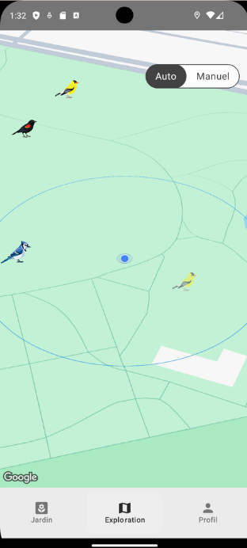
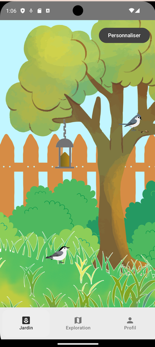
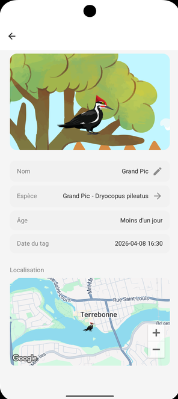
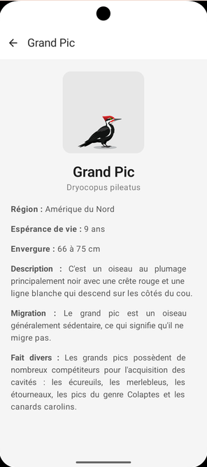

Projet universitaire
BirdQuest GO
BirdQuest GO est une application Android qui transforme l’observation des oiseaux en jeu. En mode Exploration, la carte géolocalisée permet de repérer des oiseaux à proximité et d’interagir avec eux grâce à des mini-jeux pour les ajouter à sa collection. Le mode Jardin propose un espace virtuel personnalisable pour découvrir les oiseaux sans se déplacer. Une collection et une encyclopédie des espèces complètent l’expérience.
- Kotlin
- Jetpack Compose
- NestJS
- Firebase



